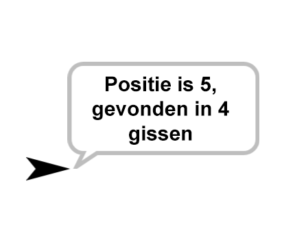

Analyseren en zoekopdrachten verbeteren
Op deze pagina, ga je zien hoe de eigenschappen van een lijst beïnvloeden hoe een algoritme de lijst doorzoekt.
Zoeken in Ongesorteerde Data
Wanneer je naar een item zoekt in ongesorteerde data, moet je alle items checken totdat je de gezochte waarde vindt.

- Bouw een
positie van getal in ongesorteerde lijstblok dat aangeeft wat de eerste locatie van een getal in een ongesorteerde lijst is. Als het getal niet gevonden kan worden, dan rapporteert het blok "Niet In Lijst" (of "NIL", als je dat liever hebt).

Het zoeken in ongesorteerde data kan lang duren als er heel veel data is, maar voor een
lijst met weinig data gaat het heel snel.
Zoeken in Gesorteerde Data
Als je naar een nummer aan het zoeken bent in gesorteerde data heb je al meer informatie. Stel je voor dat je een gesorteerde lijst hebt en je wil achter de locatie van een getal komen.
Normaal gesproken zijn gesorteerde lijsten van laag naar hoog gesorteerd. Je gaat een blok
maken dat een lijst van nummers sorteert in Hoofdstuk 8, Een Lijst
Sorteren.
Alex: Als de lijst gesorteerd is kunnen we kijken naar het middelste element van de lijst
en kijken of dat dat nummer in de eerste of laatste helft van de lijst staat. Dat zou ons tijd besparen.
Bo: Dit is een beetje zoals het raad-het-getalspel dat we hebben gemaakt: ik kies een
getal en de computer probeert het te raden door de lijst in tweeën te splitsen bij elke gok.

Alex: Maar bij dat spel raadde de computer een getal dat wij hadden gekozen. Nu willen
we een getal vinden in een lijst en daarvan de positie rapporteren. Het zou zo moeten werken:

Bo: Ja maar het voelt nog steeds hetzelfde. Het zou dezelfde opbouw moeten
hebben.
Bo's laatste opmerking is een manier van abstractie. Bo merkte op dat
positie in
gesorteerde lijst en
Raad-nummer-algoritme
over het algemeen dezelfde structuur zouden moeten hebben.
- Door het toepassen van de strategie van het raadspel kan je nu een blok schrijven dat zegt wat:
- De positie van een item in een gesorteerde lijst is.
- Het aantal keer raden die nodig waren om het getal te vinden. 
Als het getal meerdere keren in de lijst staat maakt het niet uit welke hij pakt. - Bouw dan een
positie in gesorteerde lijstblok dat de positie van een getal rapporteert in een lijst gesorteerd van laag naar hoog, als het niet in de lijst staat rapporteert het 0. (Opmerking: Deze taak is identiek aan de vorige alleen in plaats van dat het de positie "zegt", wordt die nu "gerapporteerd". )
- Vergelijk
positie in gesorteerde lijstmetpositie in ongesorteerde lijst:- Welke werkt sneller voor grote invoer?
- Welke heeft meer blokken in de code?
- Maak een tabel die bijhoudt hoeveel keer gokken het kost om een getal te vinden in een
gesorteerde lijst, afhankelijk van de lengte van de lijst als dat getal de laatste in de lijst
blijkt te zijn.
Lengte van de Lijst Aantal Gissen 3 7 3 15 63 127